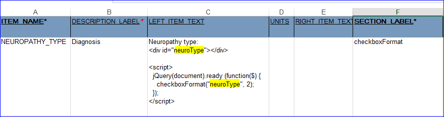

Camfetch Copy/Paste page
Human Phenotype Ontology Lookup for repeating items
Sections – Instructions:
<script src="https://gateway.rd.trc.nihr.ac.uk/camfetch/files/jquery.min.js"></script>
<script src="https://gateway.rd.trc.nihr.ac.uk/camfetch/files/jquery-ui.min.js"></script>
<script src="https://gateway.rd.trc.nihr.ac.uk/camfetch/hpo.js"></script>
<link rel="stylesheet" href="https://gateway.rd.trc.nihr.ac.uk/camfetch/files/jquery-ui.css">
<link rel="stylesheet" href="https://gateway.rd.trc.nihr.ac.uk/camfetch/files/oc-styles.css">
Items – Left item text [Where the first parameter (MyGroupLabel in this example) should be equal to the GROUP_LABEL value, followed by the number which refers to the Term input field position in the grid. The HPO code will be inserted to the input field followed by the Term field.]:
Term
<script>
jQuery(document).ready(function() {
HPO("MyGroupLabel", 1);
});
</script>
Human Phenotype Ontology Lookup for NON repeating items
Sections – Instructions:
<script src="https://gateway.rd.trc.nihr.ac.uk/camfetch/files/jquery.min.js"></script>
<script src="https://gateway.rd.trc.nihr.ac.uk/camfetch/files/jquery-ui.min.js"></script>
<script src="https://gateway.rd.trc.nihr.ac.uk/camfetch/hpo.js"></script>
<link rel="stylesheet" href="https://gateway.rd.trc.nihr.ac.uk/camfetch/files/jquery-ui.css">
<link rel="stylesheet" href="https://gateway.rd.trc.nihr.ac.uk/camfetch/files/oc-styles.css">
Items – Left item text
Term
<div id="myTermField"></div>
Code
<div id="myCodeField"></div>
Items – Right item text [Where the first parameter (MyTermField in this example) should be equal to the div id value used to identify the Term input field, followed by the div id used to identify the code input field.
<script>
jQuery(document).ready(function() {
HPO_nonrepeating("myTermField", "myCodeField");
});
</script>
SNOMED Lookup for repeating items
Sections – Instructions:
<script src="https://gateway.rd.trc.nihr.ac.uk/camfetch/files/jquery.min.js"></script>
<script src="https://gateway.rd.trc.nihr.ac.uk/camfetch/files/jquery-ui.min.js"></script>
<link rel="stylesheet" href="https://gateway.rd.trc.nihr.ac.uk/camfetch/files/jquery-ui.min.css">
<link rel="stylesheet" href="https://gateway.rd.trc.nihr.ac.uk/camfetch/files/jquery-ui.css">
<link rel="stylesheet" href="https://gateway.rd.trc.nihr.ac.uk/camfetch/files/oc-styles.css">
<script src="https://gateway.rd.trc.nihr.ac.uk/camfetch/snomed.js"></script>
Items – Left item text [Where the first parameter (MyGroupLabel in this example) should be equal to the GROUP_LABEL value, followed by the number which refers to the Term input field position in the grid. The SNOMED code will be inserted to the input field followed by the Term field.]:
SNOMED Term
<script>
jQuery(document).ready(function(){
Snomed_rep("MyGroupLabel", 1);
});
</script>
NHS Medication Lookup for repeating items
Sections – Instructions:
<script src="https://gateway.rd.trc.nihr.ac.uk/camfetch/files/jquery.min.js"></script>
<script src="https://gateway.rd.trc.nihr.ac.uk/camfetch/files/jquery-ui.min.js"></script>
<script src="https://gateway.rd.trc.nihr.ac.uk/camfetch/druglist.js"></script>
<link rel="stylesheet" href="https://gateway.rd.trc.nihr.ac.uk/camfetch/files/jquery-ui.css">
<link rel="stylesheet" href="https://gateway.rd.trc.nihr.ac.uk/camfetch/files/oc-styles.css">
Items – Left item text [Where the first parameter (CurrentDrugs in this example) should be equal to the GROUP_LABEL value,
followed by the number which refers to the Drug name input field position in the grid, followed by the position of the drug code and the class.
Drug name
<script>
jQuery(document).ready(function(){
drugList("CurrentDrugs",1,2,4);
});
</script>
OPCS Lookup for non-repeating items
Sections – Instructions:
<script src="https://gateway.rd.trc.nihr.ac.uk/camfetch/files/jquery.min.js"></script>
<script src="https://gateway.rd.trc.nihr.ac.uk/camfetch/files/jquery-ui.min.js"></script>
<script src="https://gateway.rd.trc.nihr.ac.uk/camfetch/opcs.js"></script>
<link rel="stylesheet" href="https://gateway.rd.trc.nihr.ac.uk/camfetch/files/jquery-ui.css">
<link rel="stylesheet" href="https://gateway.rd.trc.nihr.ac.uk/camfetch/files/oc-styles.css">
Items – Left item text: Procedure
Procedure
<script>
jQuery(document).ready(function(){
opcsList("opcsproc_1");
});
</script>
Items – Right item text: Procedure
<div id="opcsproc_1"></div>
Items – Left item text: SubProcedure
SubProcedure
<div id="opcssubproc_1"></div>
Items – Left item text: ProcedureCode
SubProcedure
<div id="opcscode_1"></div>
Note: Users may have multiple procedures inserted into a CRF by pasting the script multiple times and change the number in the div id accordingly (ie. opcsproc_2, opcsproc_3, etc)
Checkbox Format - Formats checkboxes into columns
Sections – Instructions:
<script src="https://gateway.rd.trc.nihr.ac.uk/camfetch/files/jquery.min.js"></script>
<script src="https://gateway.rd.trc.nihr.ac.uk/camfetch/checkboxFormat.js"></script>
Items – Left item text [First parameter = div id of the checkboxes / Second parameter = number of checkbox columns required]:
Neuropathy type:
<div ID="neuroType"></div>
<script>
jQuery(document).ready (function($) {
checkboxFormat("neuroType", 2);
});
</script>
